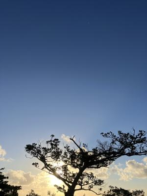
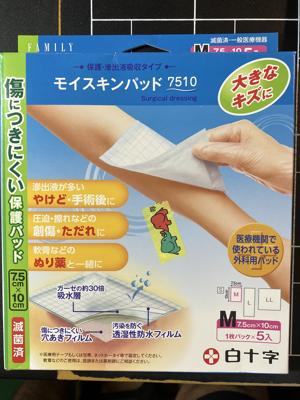
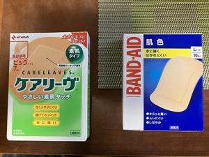

うるがいの話 ある日
最新: お使い【うるがいの話 ある日】とは 一日だけのプログです
『うるがいの話』の最新一日だけのプログで、通信料が少なく経済的だ。カニの画像をクリックすると全ての日付が載る『うるがいの話』サイトを表示します
|
|
【うるがいの話】 うるがい(ｳﾙｶﾞｲ urugai)とは、『もずくがに』の名前でとても大きくなります。 |
|---|---|
|
|
【カミマヤーの話】 猫のことを方言でマヤーといいます。カミマヤー（kamimayaa）とは、神の猫のことです。 |
|
【たながぁの音楽】 たながぁ（ﾀﾅｶﾞｰ tanagaa）とは手長えびのことで、何種類かあり大きいのは車 エビぐらいになります。 |

|
【ぶながぁの話】 ぶながぁ(ﾌﾞﾅｶﾞｰ bunagaa)とは、赤い髪の毛、赤い身体、そして身長は１ｍ２０ｃｍ ぐらい、川の蟹を食べているの目撃された。場所は沖縄県国頭郡大宜味村のと ある村僕の隣近所に住んでいる爺さんから、聞いた話です。 |
|
|
【ギーマの話】 ギーマ(giima)とは、山原の里山に咲くスズランに似た、 花を付けます。実は食べられます、 気が付くと口の周りが紫になっています。 |
2024年10月22日 (火）お使い
15:13

お義母さんが、床ずれで傷が出来たので１０センチ程のリバテープを買
って来いと、お使いを命令された。いろいろあったが、これを買った。

違うよ、これは皮膚にくっつかない！。また、失敗したね。フムフム、
確かに子供が交通事故で怪我をしたとき、同じお使いを言われ、同じ失
敗をした記憶がある。ひとつ千円もする、二つ購入していたので未開封
の一つを返品した。そして、ヨメが選んだのはコレ。言い訳するが、間
違って買った物、写真をみるとくっつきそうだよね。諦めがわるいので
一つ、試してみた、ダメだった。

お義母さんの足が、パンパンに腫れて幅の広い３Ｅの靴でも入らなくな
っている。可哀想なので、サンエーの靴屋で店員さんと相談し５Ｅのも
のをヨメは買う。ついでなので、期日前投票をしようと投票場所へ行く
おおおお！、行列が。根性ないのでやめた。家に戻ると、ある党からハ
ガキが来ていた。ん、どこで住所を知り得たのだろう。当然、入れない
ぜ。
１５時０５分 ビットコインの総資産 ￥２９、６１２（↓２０９）